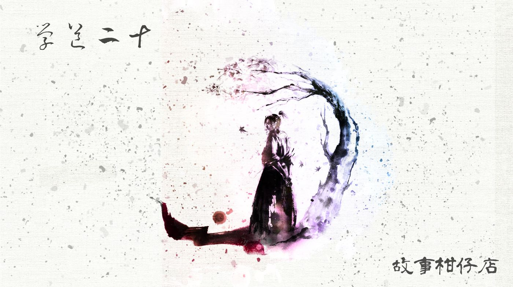
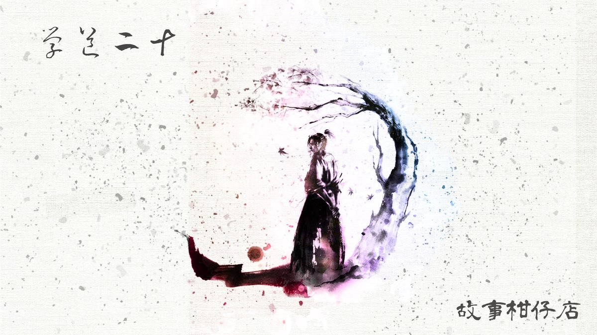

玄墨行者．學道（二十）：上位

如今，拾兒居然真的承接「玄天璣」的位子，正式成為玄墨七者一員。
他這才想起，自己連師父究竟叫什麼名字都不知道。不知道當年師父的師父給他起了什麼名字？
想想真有點悲哀，入了玄墨一門，註定是個沒有自個兒名字的人。
大夥還改不了口，倒是天璇，「老三、老三」叫得很順溜，彷彿世界上從沒過師父這個人。
「我到底該叫你師伯還是天璣呀？」虹月歪著頭問。連她都困惑了，這題果真不好解。
「繼續叫我拾兒不就得了？犯法嗎？」拾兒食指往虹月眉心輕輕一戳。
他嘴上逞快，心裡焦急得很，惦著師父留給他那張醜不拉機的手繪地圖，想趕緊偷溜下山一探究竟。偏偏剛入七者，其他人盯得緊，實在跑不了。
正想著呢，蒙叟卻傳了他。
這麼快就得下山收妖啦？他想。
進到蒙叟廂房，只見這枯瘦老頭兒躺在床上翹著細腿，一旁的預天儀則維持著極緩慢的速度安穩轉動著。蒙叟毫無緊張神色，遲遲不宣布妖氣方位。
「傳我來，不是要指派任務嗎？」拾兒沈不住氣，先開口了。
「你想去哪就去哪。今日傳你，是為了不讓人擋你。」蒙叟擺擺手，一臉瞭然於心。
拾兒喜出望外，正要告辭，卻想起師父生前最常被指派任務，恐怕跟蒙叟有因緣。於是他鼓起勇氣問：「您跟師父很熟吧？」
「怎樣叫熟？他幹的好事都給我摸清了，這算熟嗎？」
「師父、師父幹了什麼好事？」拾兒很緊張，深怕自己的仰慕一夕全毀。
「你師父……」蒙叟暗啞著聲音，像一根隨時會崩斷的弦，崎嶇地、蜿蜒地，道出連拾兒都不知道的事。
原來天璣雖最常下山收妖，但他從不一味濫殺，而是公平給予每個妖物上訴機會。倘若妖物出於無奈或逼不得已才作亂人間，天璣便會放牠一條生路。
「這不對呀！每次都得將妖怪關進鎖妖庫不是？還得向大家報告呢！」拾兒心急發問。
「這世道，有點本事才能走正道。」蒙叟解釋，一旦天璣決定放走妖物，便會以木頭製作替身，只要取該妖物的一片指甲、一根毛髮稍微作法，就足以讓替身的妖氣騙過所有人。
「師父為何要這樣做？玄墨一門的任務不就是收妖嗎？」拾兒著實更想不透了，十八年來，他所受的每個訓練，不都是為了消滅妖物做準備嗎？
「無知小兒，《玄墨宗譜》沒念熟吧？白紙黑字寫，咱任務是要維護三界平和。和平難道只有趕盡殺絕一途嗎？你們都曲了祖師的意喲！」蒙叟翻身坐起，手在膝蓋上打著拍子，灰濁眼睛空茫望向遠方。
「因為師伯都是這樣教的，師父也沒特別講，所以我……」
蒙叟撫額，嘿嘿怪笑，「天樞連我的話都聽不進去嘍，你以為天璣能改變什麼？」
拾兒不解，天樞應該是最在意祖師規範之人吧？他甚至還每日獨自提早起床在內堂靜坐哩！
「你師父肯定太疼你了。」蒙叟尖聲怪笑起來，不知為什麼，聽起來像是嘲笑，「都幾歲了還不懂，恨意才是世間最難以改變的呀！但恨意，也最能讓一個人堅強起來喲！」
拾兒還想再追問，卻被蒙叟趕了出來，「去！去！你不是有正事要辦？」
他思忖著方才的對話，仍理不出個頭緒。出了神，出了外廳，看見天樞正在驗收大曲的體術。
拾兒與烏蝶在鎖妖庫一役後，天樞對大曲便加倍嚴格。過去勉強點頭的表現，如今都只能換來天樞的震怒，大曲只能也加倍努力著，希望換來師父的肯定。
此時，大曲正不斷重複向空中踢腿，速度已經快得讓人看不見影子，但天樞沒有點頭。
日正當中，每當大曲踢出一次，汗水也跟著甩了出去，在陽光下閃閃發亮。他咬著牙，務必再快、更快、最快，師父要他想像眼前站著此生最大仇敵似的去踢，他想了半天，只有個模模糊糊的影子，一頭捲髮，身形碩壯。
拾兒不出聲，看著。
心理作用吧？發動攻擊的大曲眼神純淨，而一旁坐著看著的天樞，眼底卻有一股別人所沒有的執念。
－－－－－
#新連載依舊兩天一篇每晚準時六點半喔
#請人客多多指教
#記得去各大書店買我們的書故事柑仔店哩

